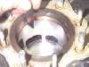
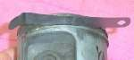
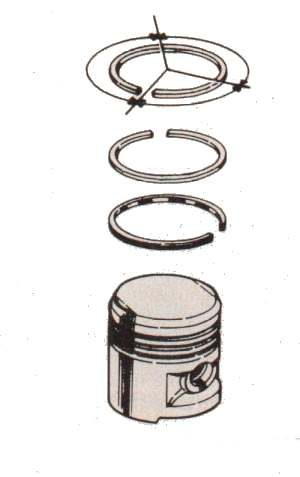
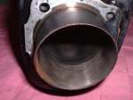
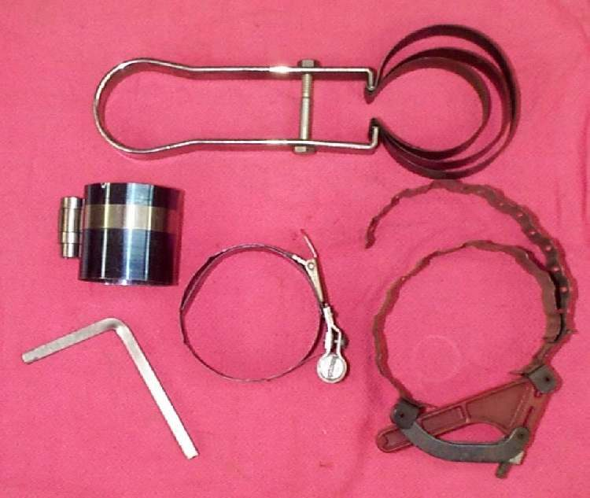
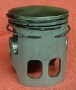

New rings only seal if the bore is within limits, the ring gap is right, and the rings are fitted the right way up. This page covers ring checks, bore finishing and refitting the piston. First measure the piston clearance and bore wear. If the bore is out of limits, boring is needed and this page is only the refit.
Safety
- Rings are hard and brittle. They snap if opened too far and have sharp ends.
- Wear eye protection when honing and when fitting circlips. A circlip that springs out can hit the eye.
- Put a rag in the crankcase opening whenever the piston is off, so a circlip cannot fall in.
You need
- Ring set of the same type and size as the old one. Match the groove and the bore size. Do not fit a larger-size ring in a smaller bore.
- The ring end gap, side clearance and installation marks from the manual.
- Cylinder hone, plain honing oil, a clean cloth and soap and hot water.
- A feeler gauge, a flat file, a ring expander, a ring compressor or a hose clamp.
- New circlips of the type the piston maker names. Types are not interchangeable.
Steps
- Deglaze the bore if the cylinder is within limits. Run a hone with plenty of honing oil up and down at a steady pace to leave a cross-hatch of fine lines at roughly 45 degrees. A few passes are enough. Never hone dry and never run the hone in a drill press. On a plated bore, give only a light pass with the stones the maker names.
- Wash the cylinder in hot soapy water, dry it and oil it at once so it does not rust. Wipe the bore with a clean oiled rag. If the rag comes up dirty, wash again until it stays clean.
- Put each ring into the bore and push it level with the piston to a short distance down from the top. Measure the end gap with a feeler gauge. If the gap is too small, file the ring ends a little at a time, keeping them square. If it is too big, the ring is wrong for the bore.
- Check the side clearance: fit the ring in its groove and slide the feeler gauge between ring and groove land. A new piston and ring set does not need this. With a reused piston, too much clearance means a new piston.
- Read the marks on each ring. The marked side faces up, to the crown. Without a mark, a taper on the outer or back face usually goes up and a plain, chrome-faced ring is the top ring. The multi-piece oil ring has no top or bottom. Check the manual if unsure.
- On a two-stroke, line each ring gap with the locating peg in its groove. Check the ring compresses fully and smoothly into its groove. If it does not, it is the wrong ring.
- Stagger the gaps around the piston so none is in line with the next ring. Spread them roughly a third or half a turn apart.
- Oil the piston, rings and bore well. Move the rings in their grooves to be sure they move freely.
- Face the piston the right way: an arrow or mark on the crown points to the exhaust or front, or an IN mark goes to the inlet side. Check the manual.
- Compress the rings with the compressor or a hose clamp and slide the cylinder over. Do not force it. If it binds, stop and reposition the rings. On a big-port two-stroke, check no ring end catches in a port.
- Fit new wrist-pin circlips, fully seated in their grooves. Fit a new base gasket or O-ring.
- Wash out any dirt and oil the cylinder walls again before the cylinder finally goes down.
Check your work
- Ring gaps in range and staggered, markings up, all rings turn freely in their grooves.
- Piston turns smoothly through the stroke by hand with no tight spot.
- Run the engine gently and change the oil soon after the first short run, then check the oil for metal.
If it did not fix the problem
- Smoke continues: Engine still smokes after a rebuild.
- Low compression remains: Low compression, Test engine compression.
- Blue smoke: Blue or grey smoke from the exhaust.